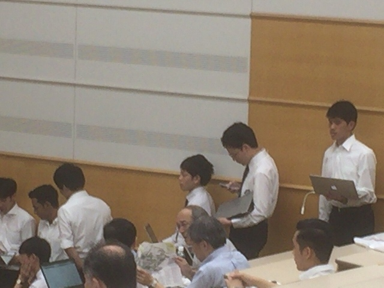
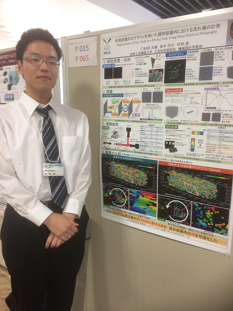
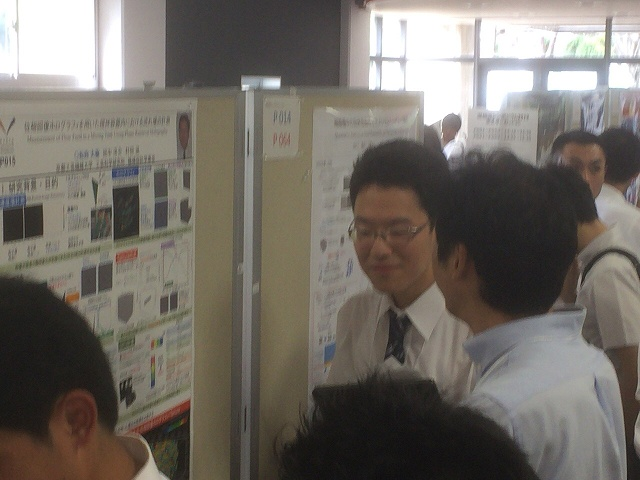
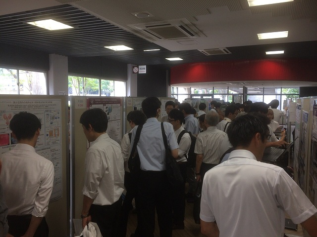
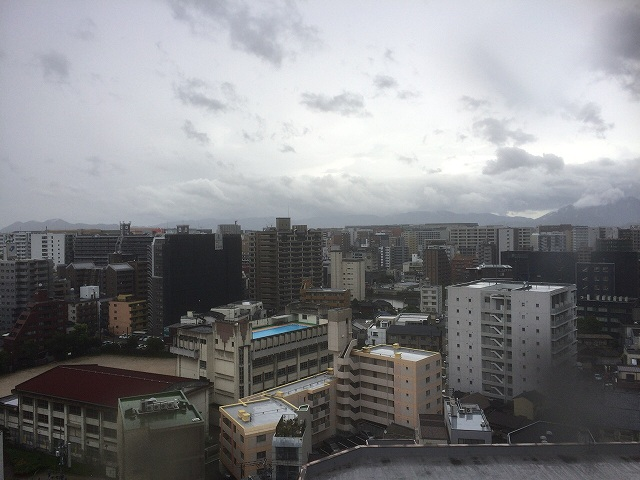
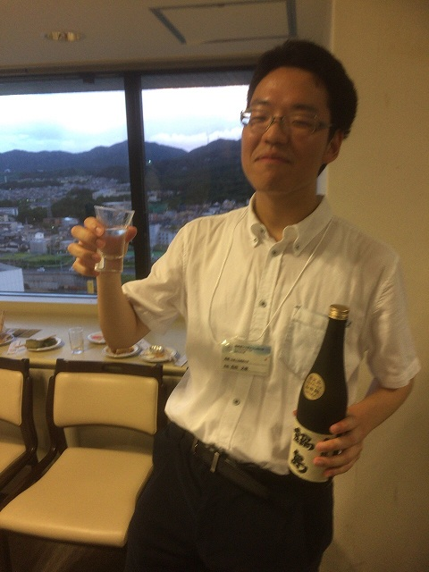
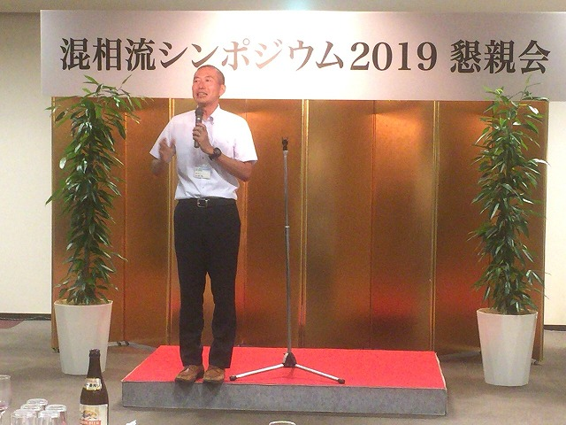

| ・ 混相流シンポジウム2019@博多，福岡大 (R01.08.05-07) | |||
去年の東北では台風のため2日目がなくなりました．今年も怪しい雲行きでしたが，混相流シンポジウム2019はなんとか開催されました．今回はM1のM4さんが「位相回復ホログラフィを用いた撹拌容器内における流れ場の計測」という題目で， ポスターと口頭発表をおこないました．助教の人はAJKから引き続きです． |
|||
|

フラッシュトーク待ち |

ポスター | ||
|

人だかり |

混み混み | ||
|

2日は晴れ |
嵐を呼ぶ男 | ||
|

明日がなんじゃーい |

次回は静岡大で！ | ||
|
無事に発表終了 |
可視化よりはいけました | ||